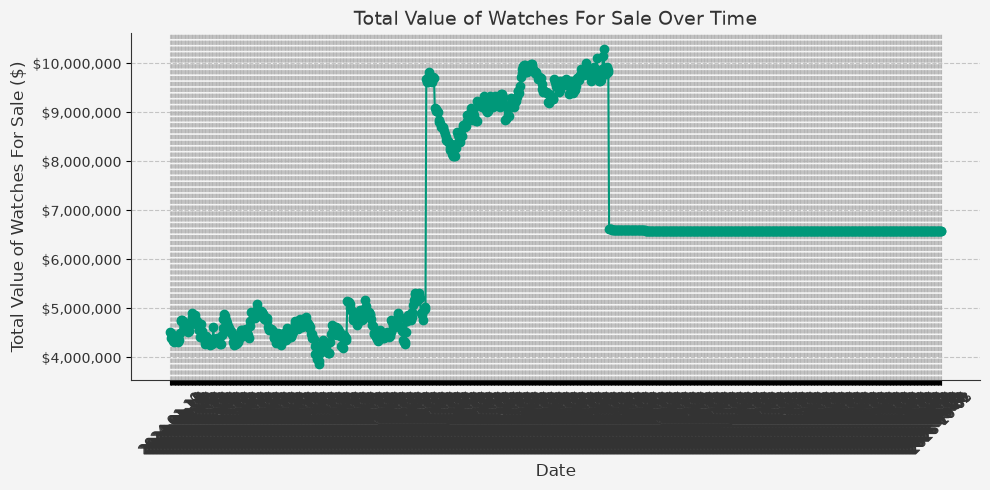

Value of sold Watches: $0.00
Value of listed Watches: $0.00
Value of unsold Watches: $6,586,400.00
| Title | Old Price | New Price | Inventory URL |
|---|
| Title | Price | Inventory URL |
|---|---|---|
| 1965 Rolex 18K Yg Gmt-Master 1675 No Crown Guard With Tropical Dial | None | Link |
| 2025 Rolex Oyster Perpetual 126000 Black Dial With Box & Papers | None | Link |
| 1991 Rolex 18K Yg Daytona 16528 Inverted 6 Diamond Dial | None | Link |
| 1978 Rolex 18K Yg Gmt-Master 1675 Black Nipple Dial | None | Link |
| 1956 Rolex 18K Yg Oyster Perpetual 6569 Tropical Champagne Dial | None | Link |
| 1995 Rolex 18K Yg Day-Date 18238 Fossil Diamond Dial | None | Link |
| 1997 Rolex Zenith Daytona 16520 White Dial | None | Link |
| 2004 Rolex Explorer Ii 16570 With Papers | None | Link |
| 1970 Rolex Red Submariner 1680 Mk 2 Meters First Tropical Dial With Box & Double Punch Papers | None | Link |
| Title | Status | Inventory URL |
|---|
